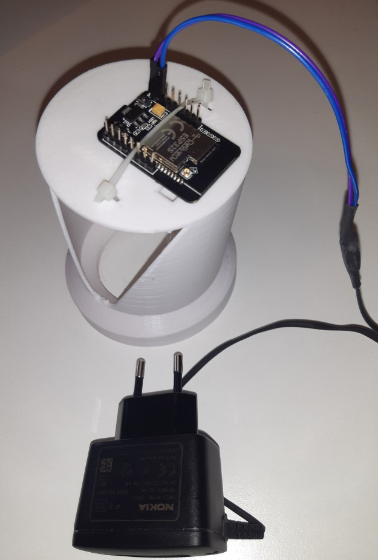

Acquisition

or drop a JPEG or PNG here
An INT8 model on the meter reads the register and sends a 20-byte authenticated reading over cellular to WASAC and the customer's phone.

Waiting for wheel regions.
| Op | Output (H×W×C) | MACs |
|---|
| Field | Value | On-air bytes | Protection |
|---|
| Time (UTC) | Register m³ | Used m³ | m³/day | Bill RWF | Status |
|---|
No messages